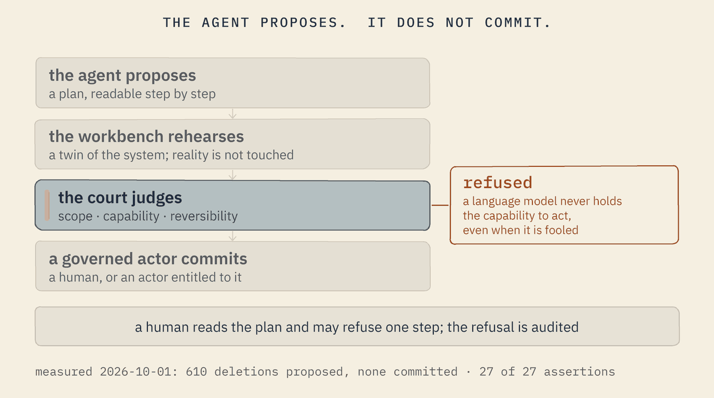
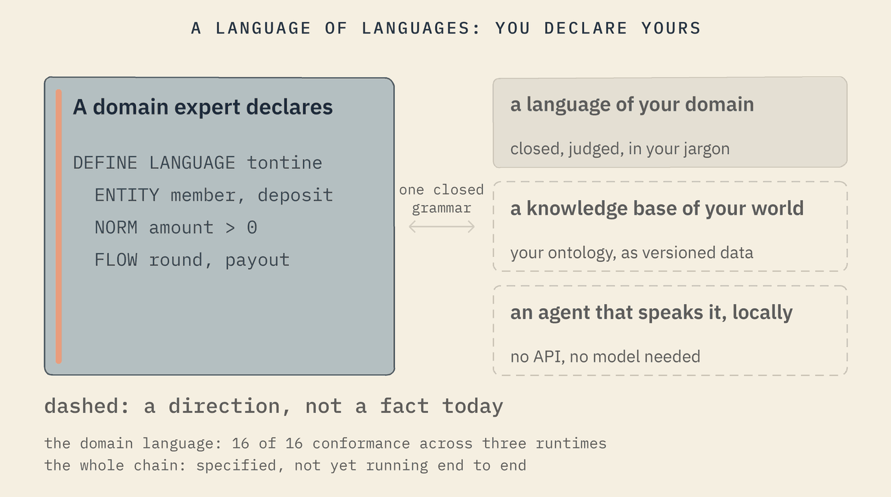

The agentic paradigm
Machines now write and act. Softanza's answer is not to trust them more carefully; it is to change where they are allowed to stand. An agent speaks a declared language, rehearses in a workbench, faces a court, and never holds the capability to commit. This page shows the mechanism, the way of building it calls wise coding, the language of languages, the interface constitution, and refinement as a paradigm.
The agent proposes. It does not commit.
A Softanza language has six readers: the programmer, the analyst, the designer, the decision maker, the educator, and the agent. The agent is the one it was designed for last, and the one that speaks it most. Four things make that meeting safe.

1 · The grammar constrains
Every declared language emits its constraint grammar, and the engine's decoder makes a violating token impossible to emit. The agent can only utter valid sentences. Malformedness dies by construction; falsehood still faces the court.
2 · The workbench rehearses
Every file write, every deletion, every memory update goes to a virtual twin that holds no reference to reality. The real file still exists; the workbench holds the proposed version. The agent's only export is a plan, readable operation by operation.
3 · The court judges
An actor that does not say what it covers, nor whether its acts are reversible, is refused before its first tick. The plan passes scope, capabilities, governance. Risk and irreversibility are two separate axes: a small act that cannot be undone deserves more ceremony than a large one that can.
4 · A governed actor commits
A language model never holds the "effectful" capability: it commits nothing, even when fooled. A human, or an actor entitled to it, commits; a human can reject a single step, and the refusal is audited.
What it WOULD have done (610 operations): Update plan (610 of 610 operations to commit): * 1. delete file '…/courses/elementary-introduction/course.zknw' * 2. delete file '…/courses/elementary-introduction/curriculum.zknw' * 3. delete file '…/chapters/01-find-then-apply.ar.md' ...
An AI helper asks to commit the plan:
actor 'amina-helper-llm' cannot commit
-- it lacks the 'effectful' capability
(required by operation 1)
PROVED the court admitted the declaration
PROVED the agent rehearsed every deletion
PROVED the course folder still holds all 610 files
PROVED an AI cannot commit what the agent proposedrun on 2026-09-30 at 23:10 by the decision-makers' demo, scene 6; the same mechanism with a human reviewer rejecting one step is the guard virtual_system_twin_narrated, scene 5
The Softanza way Safety is not a prompt asking the model to be careful. It is an architecture in which the model has nothing to be careful with.
Wise coding, against vibe coding
"Vibe coding" is the practice of prompting a machine and keeping whatever comes out. Softanza names the inverse, and builds it.

In vibe coding the human prompts and the machine guesses. Structure is whatever survives the guessing; the knowledge lives nowhere; the result is code you must trust without a brain behind it.
In wise coding it is Softanza that asks the user. The system knows what a complete domain model requires, because the ontology and the rules define the target shape. It measures the gap between that shape and what it has heard so far, and turns each gap into the next well-structured question. An answer may come in five registers: a choice among options, a data structure, a formula, a sentence in natural language, or examples. Every answer is checked against the world graph: one acceptable reading is accepted; several are listed for the user to choose; none is refused, with the nearest alternatives. The session ends with real artefacts: the knowledge base written, the data in place, an operational system standing.
-- Scene 4: the session ends by WRITING the knowledgebase -- [OK] gaps closed [OK] Conclude writes the SPACE as .zknw [OK] the transcript reads as dialogue [OK] the conversation persists (*.stzconv) [OK] concluding with open gaps REFUSES (LAW 3) TOTAL: 13 assertions, 13 pass, 0 fail
run on 2026-10-01 at 09:39: wisecoding_narrated (13 of 13) and wisecoding_rich_narrated (52 of 52), each in about three seconds; the doctrine is section 0.3 of SOFTANZA_INTELLIGENCE_ARCHITECTURE.md
The Softanza way Expression is free, admission is governed. Guessing is replaced by asking; vibes are replaced by governance.
A language of languages: declare yours
Softanza's founding act, and its own answer to programming in the agentic age, is that declaring a language is as easy as declaring a variable. This is not how software is written today; it is the way Softanza proposes. A domain expert writes, in plain text, the things of their world, the rules between them and the flows that move them. Out of that one declaration come a language in their jargon, a knowledge base of their world, and an agent that speaks it. All of it runs on the device, powered by the platform's own tools: no API, no remote model, no subscription.

What a declaration looks like, from the estate's own machine language. Seventy-nine lines declare the whole language; the meta-court judged it: seven declarations, five forms, zero expressions.
DEFINE LANGUAGE machine AS ( VERSION "0.1", GRAMMAR "0.1", COURT "declarative/machine/fixtures.json", EXTENSION ".machine" ) ... REFUSAL closed_verbs AS ( MESSAGE "The machine verb set is closed (DEFINE)." )
And what a domain expert's world looks like, from the query language's conformance fixtures: a savings circle, declared in its own words.
DEFINE ENTITY deposit (id: uuid, member: text, amount: currency, ...) RATIONALE "One member's contribution to one round of the circle" DEFINE NORM positive_deposit AS ( RULE: amount > 0, MESSAGE: "A deposit must bring something to the circle" )
Three strata per language: a closed syntax, a knowledge-base semantics, a conversational pragmatics; the natural layer compiles to the language's own closed query grammar and never to host code, and it is dictionary-driven, which is why it needs no model. The machine declaration is in the Harobanda repository, file declarative/machine/machine.stzu. The language-making discipline's own repository is not public yet; its stage, in its own words: "Phase 1 closed, Phase 1.5 open; blueprint and studies, no code in this repository yet". What runs today runs in the platform: chapter 12 of the course, "Teach a world", and the natural layer shown on the Platform page.
The Softanza way This is not how programming is done today; it is Softanza's proposal for the agentic age: a platform that knows your world, because you declared it, in your language, and the platform judged the declaration.
The Zui constitution: a law a machine can refuse to violate
Interfaces are decaying in the agentic age, and not for lack of capable generators: the generators reproduce, at machine speed, every inherited assumption of the corpus they learned from. Softanza's answer is Zui, a constitution for interfaces: 122 rules in 31 sets under 7 articles, 22 verbs in 6 families, 6 operator rights, and a verifier that checks a page against the law.
The seven articles
Calm · Intent over mechanics · Visible state · Reversibility · Predictable authority · Operator primacy and vibes · Amendment. Every rule records who enforces it: a judgment, a tool, or a machine.
The twenty-two verbs
Orienting: discover, understand, locate. Attention: focus, filter, compare. Information: read, scan, scroll, zoom. Selection: select, highlight, preview, mark. Action: act, confirm, cancel, undo. Continuity: pause, resume, retry, exit. Every element of an interface must trace to at least one; an element that traces to none is a structural error. The grammar is closed: a new medium adds renderings, never verbs.
Five rules, as written
Cognitive mercy: the interface must never compete with the user's thinking. Non-accusatory pathfinding: every error message contains a verb that tells the user how to fix it. The undo covenant: every destructive action has an instant, one-click undo for ten seconds. The legibility floor: main reading text is at least one rem, never lighter than 4.5:1 against its background; secondary text may be quieter, never less legible. The verb on the button: every action control states the action it performs.
Born from defects
Every rule numbered above 104 was canonised from a defect an agent produced while building a real site, under explicit instruction to be careful. Without a machine-checkable law, the defects regenerate endlessly. Article V: an intelligent agent is an actor under this law, never an authority above it.
Constitution version 3.11 of 2026-08-16; the verifier passes 50 of 50 conformance fixtures and conforms at level 4; two consuming products are pinned to it. Read in the constitution's repository on 2026-10-01; that repository is not public yet, and this site will link it the day it is. This site itself follows the legibility floor: its reading text is 17 pixels, and nothing is set small to say it matters less.
The Softanza way Someone has to write the principles down in a form a machine can refuse to violate. Guidelines did not stop the decay of interfaces. A law can.
Refinement-oriented programming
If an agent can produce a thousand changes an hour, the unit of work can no longer be "the change". Softanza's answer is a paradigm, an implementation under way, and a book.
The paradigm, in three sentences
Refinement-oriented programming is one meta-paradigm governing three first-class refinement domains: code, interface and data. The machinery is shared across all three: the refinement as the unit, the cascade as validation, the gate as the canonical writer, the audit chain as provenance, authority as permission, reversibility built in. Every non-trivial project produces all three kinds of artefact and most projects fail at the seams between them; the cascade crosses the boundaries so the seams become tractable.
The four words
A refinement is a single, deliberate change made typed, validated, attributed and reversible: like a commit, but checked against your specifications before it lands. The cascade is the full set of things a change affects, computed before it commits. The gate decides: a change that breaks a declared rule cannot land; it is refused structurally, not merely flagged. The audit chain records author, authority, rule and verdict as a by-product of the work, so "who decided this three years ago" is a query.
The implementation specification
A corpus of over a hundred specifications, an interactive prototype of the refinement environment, and the first module of a Zig engine. The repository is not public yet, and this site says so rather than promising a date.
The book manuscript
Refinement-Oriented Programming, a manifesto for software in the agentic era, by Mansour Ayouni, first of the AYOUNI books: a manuscript of eighteen chapters and a coda, from "What broke" and "The unit changed" through "Writing loops, not prompts" and "Agents, and the rest of us" to "Honest boundaries". Version 0.1, 2026.
The Softanza way A refinement is judged before it lands, by a gate that reads your rules, and leaves a chain anyone can query. The bottleneck of the agentic age is review, and review becomes structure.
For agents: how to read Softanza
This section also addresses an agent reading this site. Softanza is designed to be read by a machine as much as by a human.
Ask the library
The library documents itself. An object answers Ask() with its own methods, explains each with ExplainMethod(), and says how with HowTo(). An agent does not need to guess a name.
? Q([ 1, 2, 2 ]).Ask("how do I remove duplicates")Unique 1.10 remove duplicates / unique (engine-backed) UniqueCS ... RemoveDuplicates
run on 2026-10-01 at 01:40
Declare yourself in an agent file
An agent is a file, judged at load: what it covers, the reversibility class of its acts, the execution posture of every function it calls. The court refuses in fixed sentences, the same at both doors.
A bank analyst declares a stock-watcher agent, first without saying what it covers: -> refused / [pia-coverage @ coverage] an agent must say WHAT IT COVERS. ...then with its coverage stated: -> The court judged your declaration, and every promise of the exercise was kept.
run on 2026-09-30 at 23:10, demo, scene 7
Speak the grammar, not general code
A declared language emits its constraint grammar; a model whose sampler is constrained to it can only emit valid sentences. That is the platform's contract C9: structure kills malformedness, never falsehood.
The security numbers
The drill was replayed on 2026-10-01 at 00:41. A language model plays the investigator, proposes the right plan, and commits nothing; the on-call human commits the same plan, and containment holds. Limits, stated by the threat model itself: one attack shape, on loopback, on one machine; detection runs on demand, not continuously.
WHEN five bad passwords are sent over real HTTP THEN credential stuffing was detected [PASS] WHEN an LLM investigator tries to contain THEN it commits nothing [PASS] THEN and the victim can still log in [PASS] WHEN the on-call human contains THEN the lock and the session revocation were committed [PASS] THEN containment holds, verified from outside the target [PASS] >> TIME TO DETECT : 395 ms (first bad password -> detection on verified evidence) >> TIME TO CONTAIN: 50 ms (detection -> account locked + sessions ended, verified) TOTAL: 27 assertions, 27 pass, 0 fail real 0m7.079s
The full narration: stz-agents-that-cannot-hurt-you-narration.md · the workbench guard: safeworld_narrated (76 assertions) · the governed crossing: governance_crossing_narrated · the areas in the Atlas: governance doctrine, agents and conversation, security.